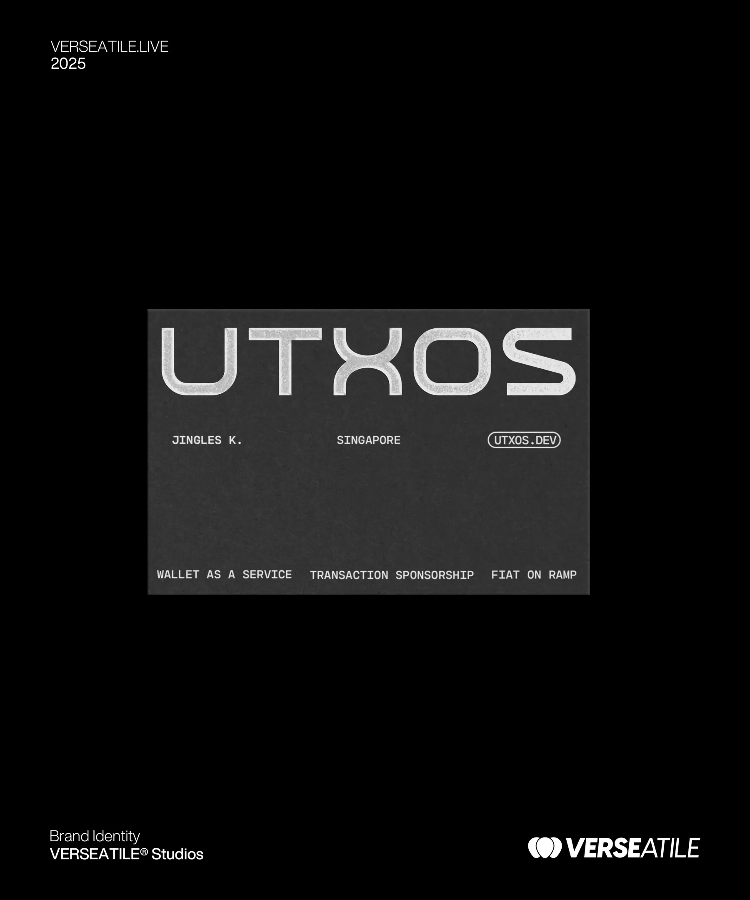

UTXOS
A digital brand identity project delivered within a wider client portfolio, with a focus on communication, creative handovers and delivery coordination.
Brand identity within a broader account portfolio
UTXOS is presented here as a brand identity project associated with Verseatile Studios in 2025. My contribution is framed around project delivery and client coordination, rather than claiming authorship of the identity itself.
Connecting client needs with creative delivery
As part of the wider Verseatile account portfolio, I supported client communication and requirements gathering, helped clarify deliverables and timelines, coordinated creative handovers, tracked feedback and approvals, and followed up on open items to keep work moving towards delivery. These responsibilities sat alongside the day-to-day management of other concurrent client accounts.
The visuals show the selected identity work. The case study describes the delivery responsibilities associated with my role without assigning unverified project-specific results or creative ownership.
From scope to handover
- 01Clarify project requirements, scope and expected deliverables
- 02Keep client communication and creative handovers organised
- 03Track deadlines, feedback, approvals and outstanding decisions
- 04Coordinate final delivery and communicate next steps
Selected visuals
2 assets

This page describes the project as presented in the portfolio and the documented responsibilities of my broader role; it does not attribute unverified outcomes to the UTXOS project.